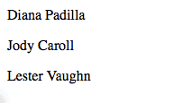

Предупреждение
Данное руководство предполагает базовые знания Python
Это руководство предполагает установленный Odoo
Создание базового модуля
В Оду задачи выполняются путем создания модулей.
Модули настраивают поведение Odoo, либо путем добавления нового функционала или изменения уже существующего (в том числе функционала, добавленного другими модулями).
Параметр командной строки scaffolding может создать базовый модуль. Чтобы быстро начать работу, просто вызовите:
$ ./odoo.py scaffold Academy my-modules
Данная инструкция автоматически создаст каталог с модулями my-modules с модулем academy внутри. Каталог может быть уже существующим каталогом модулей, но в этом случае имя модуля должно быть уникальным в пределах данного каталога.
Демонстрационный модуль
У нас есть "готовый" модуль подготовленный к установке.
Для его установки нам не потребуется затратить много усилий:
запустите Odoo сервер с параметрами
$ ./odoo.py --addons-path addons,my-modulesперейдите http://localhost:8069
создайте новую базу, включая демонстрационные данные
перейдите
в правом верхнем углу уберите критерий фильтра Installed и введите в поиск academy
нажмите кнопку Install в модуле Academy
Что касается браузера
Контроллеры интерпретируют запросы браузера и отправляют данные обратно.
Добавьте простой контроллер и убедитесь, что он описан в файле __init__.py (иначе Odoo не сможет его найти):
# -*- coding: utf-8 -*-
from openerp import http
class Academy(http.Controller):
@http.route('/academy/academy/', auth='public')
def index(self, **kw):
return "Hello, world"
# @http.route('/academy/academy/objects/', auth='public')
# def list(self, **kw):
Выключите сервер нажав в консоли (^C), а затем перезапустите его с параметрами:
$ ./odoo.py --addons-path addons,my-modules
открыв страницу http://localhost:8069/academy/academy/, вы увидите "страницу" со следующим содержанием:

Шаблоны
Создание HTML в Python - не самое приятное занятие.
Классическим решением в данной ситуации будет работа с templates, псевдо-документы со специальными иструкциями для заполнения и отображения. Odoo позволяет использовать любой шаблонизатор Python, но так же предоставляет и свой собственный QWeb шаблонизатор, который интегрирован с другими возможностями самой Odoo.
Создайте шаблон и убедитесь, что файл шаблона зарегистрирован в файле __openerp__.py манифеста, измените контроллер, чтобы использовать наш шаблон:
class Academy(http.Controller):
@http.route('/academy/academy/', auth='public')
def index(self, **kw):
return http.request.render('academy.index', {
'teachers': ["Diana Padilla", "Jody Caroll", "Lester Vaughn"],
})
# @http.route('/academy/academy/objects/', auth='public')
# def list(self, **kw):
<openerp>
<data>
<template id="index">
<title>Academy</title>
<t t-foreach="teachers" t-as="teacher">
<p><t t-esc="teacher"/></p>
</t>
</template>
<!-- <template id="object"> -->
<!-- <h1><t t-esc="object.display_name"/></h1> -->
<!-- <dl> -->
Шаблон с помощью инструкции (t-foreach) переберет всех учитилей (предоставленных через template context), и выведет имя каждого учителя отдельным абзацем.
Наконец перезапустите Odoo и обновите данные модуля (для установки шаблона), перейдя в раздел и нажав Upgrade.
Совет
В качестве альтернативы, можно перезапустить Odoo что приведет к единовременному обновлению модулей:
$ odoo.py --addons-path addons,my-modules -d academy -u academy
Перейдя по адресу http://localhost:8069/academy/academy/ вы увидите следующий результат:
Хранение данных в Odoo
Модели данных Odoo сопоставляются с таблицами базы данных.
В предыдущем разделе мы просто отображали список строк, статически прописанных в коде Python. Это не позволяет вносить изменения или использовать постоянное хранилище, поэтому мы переместим наши данные в базу данных.
Определение модели данных
Определите модель данных учителя и убедитесь, что ее импорт правильно описан в __init__.py таким образом, что она будет правильно загружена:
from openerp import models, fields, api
class Teachers(models.Model):
_name = 'academy.teachers'
name = fields.Char()
Затем выполните настройку basic access control для модели данных и добавьте их в манифест:
# always loaded
'data': [
'security/ir.model.access.csv',
'templates.xml',
],
# only loaded in demonstration mode
id,name,model_id:id,group_id:id,perm_read,perm_write,perm_create,perm_unlink
access_academy_teachers,access_academy_teachers,model_academy_teachers,,1,0,0,0
Это просто дает доступ для чтения (perm_read) для всех пользователей (group_id:id остается пустым).
Примечание
Файлы данных (XML or CSV) должны быть добавлены в манифест модуля, файлы Python (модели или контроллеры) не должны, но должны быть импортированы из __init__.py (прямо или косвенно)
Предупреждение
Пользователь суперадминистратор обходит контроль доступа, у него есть доступ ко всем моделям данных, даже если ему не предоставлен доступ
Демонстрационные данные
Второй шаг - добавить в систему демонстрационные данные для того, чтобы можно было легко протестировать их. Это делается путем добавления demo файл с данными, который должен быть связан с манифестом:
<openerp>
<data>
<record id="padilla" model="academy.teachers">
<field name="name">Diana Padilla</field>
</record>
<record id="carroll" model="academy.teachers">
<field name="name">Jody Carroll</field>
</record>
<record id="vaughn" model="academy.teachers">
<field name="name">Lester Vaughn</field>
</record>
</data>
</openerp>
Совет
Файлы с данными могут использоваться как для демонстрационных так и не демо-данных. Демонстрационные данные загружаются только в демонстрационном режиме и могут использоваться для тестирования и демонстрации процессов, не-демо-данные всегда загружаются и используются в качестве начальной настройки системы.
В этом случае мы используем демонстрационные данные, потому что реальный пользователь системы хотел бы внести или импортировать свой собственный список учителей, а данный список полезен только для тестирования.
Доступ к данным
Последний шаг - изменить модель данных и шаблон для использования наших демонстрационных данных:
Извлекать записи из базы данных вместо статического списка
поскольку
search()возвращает набор записей, соответствующих фильтру (в данном случае все записи), измените шаблон, чтобы вывестиnameкаждого учителя.
class Academy(http.Controller):
@http.route('/academy/academy/', auth='public')
def index(self, **kw):
Teachers = http.request.env['academy.teachers']
return http.request.render('academy.index', {
'teachers': Teachers.search([])
})
# @http.route('/academy/academy/objects/', auth='public')
<template id="index">
<title>Academy</title>
<t t-foreach="teachers" t-as="teacher">
<p><t t-esc="teacher.id"/> <t t-esc="teacher.name"/></p>
</t>
</template>
<!-- <template id="object"> -->
Перезапустите сервер и обновите модуль (чтобы обновить манифест и шаблоны и загрузить демонстрационный файл), затем перейдите по адресу http://localhost:8069/academy/academy/. Страница должна выглядеть несколько иначе: имена должны просто начинаться с префикса (идентификатор записи в базе данных для учителя).
WYSIWYG инструметы вебсайта
В состав Odoo входит модуль, который является инструментом для созданию веб-сайтов.
До сих пор мы использовали контроллеры напрямую, но в Odoo 8 была добавлена более глубокая интеграция нескольких сервисов (таких как, стиль по умолчанию, тема) через модуль website.
для начала добавим
websiteв зависимости для модуляacademyЗатем добавьте в контроллер флаг
website=Trueданное действие позволит задействровать новые переменные в теле запроса и позволит использовать макет веб-сайта в нашем шаблонеиспользуйте макет вебсайта
website.layoutв шаблоне
'version': '0.1',
# any module necessary for this one to work correctly
'depends': ['website'],
# always loaded
'data': [
from openerp import http
class Academy(http.Controller):
@http.route('/academy/academy/', auth='public', website=True)
def index(self, **kw):
Teachers = http.request.env['academy.teachers']
return http.request.render('academy.index', {
<openerp>
<data>
<template id="index">
<t t-call="website.layout">
<t t-set="title">Academy</t>
<div class="oe_structure">
<div class="container">
<t t-foreach="teachers" t-as="teacher">
<p><t t-esc="teacher.id"/> <t t-esc="teacher.name"/></p>
</t>
</div>
</div>
</t>
</template>
<!-- <template id="object"> -->
После перезапуска сервера при обновлении модуля (для того чтобы обновить манифест и шаблон), зайдя на страницу http://localhost:8069/academy/academy/ вы уведите более приятную картину. На странице будут отображены логотип, и ряд других встроенных элементов (меню верхнего уровня, футер, …)

В макете сайта также предусмотрена поддержка WYSIWYG инструментов: нажмите Sign In (в правом верхнем углу), введите учетные данные (admin / admin по умолчанию) затем нажмите Log In.
Теперь в Odoo есть "пристойный": интерейс управления. Для начала нажмите на пункт меню Website (левый верхний угол)
Мы снова на странице веб-сайта, но в качестве администратора, имея доступ к расширенным возможностям, предоставляемые поддержкой модуля website:
редактор кода шаблона (), где вы можете видеть и редактировать все шаблоны, используемые для текущей страницы
кнопка Edit в верхнем левом углу переходит в «режим редактирования», где доступны блоки (сниппеты) и расширенная текстовая версия
ряд других функций, таких как предварительный просмотр для мобильных устройств или SEO
URL-адреса и маршрутизация
Методы контроллера ассоциируются с маршрутами через декоратор route(), который берет строку маршрута и какое-то количество атрибутов, для настройки его поведения или безопасности.
Мы видели строку маршрутизации "literal", которая в точности совпадает с разделом URL, но строка маршрута может также использовать converter patterns, которые берут совпадающие части URL и делают их доступными, как локальные переменные. Например, мы может создать метод контроллера, который берет часть URL и выводит его:
'teachers': Teachers.search([])
})
@http.route('/academy/<name>/', auth='public', website=True)
def teacher(self, name):
return '<h1>{}</h1>'.format(name)
# @http.route('/academy/academy/objects/', auth='public')
# def list(self, **kw):
# return http.request.render('academy.listing', {
Перезапустите Odoo, зайдите по адресу http://localhost:8069/academy/Alice/ и http://localhost:8069/academy/Bob/ и Вы увидите, чем они различаются.
Как видно из названия, converter patterns не просто делают извлечение, они также выполняют проверку и преобразование, поэтому мы можем изменить новый контроллер так, чтобы принимать только целые числа:
'teachers': Teachers.search([])
})
@http.route('/academy/<int:id>/', auth='public', website=True)
def teacher(self, id):
return '<h1>{} ({})</h1>'.format(id, type(id).__name__)
# @http.route('/academy/academy/objects/', auth='public')
перезапустите Odoo, зайдите по адресу http://localhost:8069/academy/2, обратите внимание, что старое значение было строкой, а новое было преобразовано в целые числа. Попробуйте обратиться к http://localhost:8069/academy/Carol/ и обратите внимание, что страница не найдена: поскольку «Carol» не является целым числом, поэтому маршрут был проигнорирован, и сервер вернул ответ, что маршрут не найден.
Odoo предоставляет дополнительный преобразователь, называемый model, который предоставляет записи в том случае, когда задан их id. Давайте использовать его для создания общей страницы на которой будут показаны биографии учителей:
'teachers': Teachers.search([])
})
@http.route('/academy/<model("academy.teachers"):teacher>/', auth='public', website=True)
def teacher(self, teacher):
return http.request.render('academy.biography', {
'person': teacher
})
# @http.route('/academy/academy/objects/', auth='public')
</div>
</t>
</template>
<template id="biography">
<t t-call="website.layout">
<t t-set="title">Academy</t>
<div class="oe_structure"/>
<div class="oe_structure">
<div class="container">
<p><t t-esc="person.id"/> <t t-esc="person.name"/></p>
</div>
</div>
<div class="oe_structure"/>
</t>
</template>
<!-- <template id="object"> -->
<!-- <h1><t t-esc="object.display_name"/></h1> -->
<!-- <dl> -->
Затем измените список модели для ссылки на наш новый контроллер:
<div class="oe_structure">
<div class="container">
<t t-foreach="teachers" t-as="teacher">
<p><a t-attf-href="/academy/{{ slug(teacher) }}">
<t t-esc="teacher.name"/></a>
</p>
</t>
</div>
</div>
<div class="oe_structure"/>
<div class="oe_structure">
<div class="container">
<h3><t t-esc="person.name"/></h3>
</div>
</div>
<div class="oe_structure"/>
Перезапустите Odoo и обновите модуль, после чего вы можете посетить страницу каждого преподавателя. В качестве упражнения попробуйте добавить блоки на страницу учителя, чтобы написать биографию, затем перейти на страницу другого преподавателя и так далее. Вы обнаружите, что ваша биография разделяется между всеми учителями, потому что блоки добавляются к шаблону , а шаблон биографии используется всеми преподавателями, когда одна страница редактируется, все они редактируются одновременно.
Работа с полями
Данные, относящиеся к конкретной записи, должны быть сохранены в этой записи, поэтому давайте добавим новое поле биографии нашим учителям:
_name = 'academy.teachers'
name = fields.Char()
biography = fields.Html()
<div class="oe_structure">
<div class="container">
<h3><t t-esc="person.name"/></h3>
<div><t t-esc="person.biography"/></div>
</div>
</div>
<div class="oe_structure"/>
Перезапустите Odoo и обновите представления, перезагрузите страницу учителя и… поле невидимо, так как оно не ничего содержит.
Для полей записей шаблоны могут использовать специальную директиву t-field, которая позволяет редактировать содержимое поля прямо из веб-сайта с помощью интерфейсов для конкретных областей. Измените шаблон person так, чтобы можно было задействовать t-field:
<div class="oe_structure"/>
<div class="oe_structure">
<div class="container">
<h3 t-field="person.name"/>
<div t-field="person.biography"/>
</div>
</div>
<div class="oe_structure"/>
Перезапустите Odoo и обновите модуль, теперь под именем учителя появится поле для ввода и новая зона для блоков в режиме Edit. Содержимое, введенное там, хранится в соответствующем поле biography учителя и, таким образом, является уникальным для этого учителя.
Имя учителя также доступно для редактирования, и при сохранении изменения видны на странице.
t-field может также принимать параметры форматирования, которые зависят от конкретного поля. Например, если мы отобразим дату изменения записи учителя:
<div class="oe_structure">
<div class="container">
<h3 t-field="person.name"/>
<p>Last modified: <i t-field="person.write_date"/></p>
<div t-field="person.biography"/>
</div>
</div>
в этом случае дата отображается очень «компьютерным» образом и трудно читается, но мы могли бы запросить версию, понятную человеку:
<div class="oe_structure">
<div class="container">
<h3 t-field="person.name"/>
<p>Last modified: <i t-field="person.write_date" t-field-options='{"format": "long"}'/></p>
<div t-field="person.biography"/>
</div>
</div>
или альтернативное отображение:
<div class="oe_structure">
<div class="container">
<h3 t-field="person.name"/>
<p>Last modified: <i t-field="person.write_date" t-field-options='{"widget": "relative"}'/></p>
<div t-field="person.biography"/>
</div>
</div>
Администрирование и интеграция с ERP
Краткое и неполное введение в администрирование Odoo
Администрирование Odoo было упомянуто в разделе website support. Мы можем вернуться к нему, используя меню (или Sign In если Вы не авторизованы).
Концептуальная структура бэкэнда Odoo достаточно проста:
сначала находятся пункты меню, дерево (пункты меню могут иметь под-пункты) записей. Пункты меню без ссылок на дочерние элементы…
Действия. Действия имеют разные типы: ссылки, отчеты, код, который должен выполнять Odoo или отображение данных. Действия для отображения данных называются действиями окна, и говорит Odoo отображать данную модель данных в соответствии с набором требуемых представлений...
представление имеет тип, широкий выбор категорий, которым оно соответствует (преставление в виде списка, графика, календаря) и архитектуру, которая настраивает способ отображения модели внутри представления.
Редактирование через систему администрирования Odoo
По умолчанию модель данных Odoo по сути невидима для пользователя. Чтобы сделать её видимой, она должна быть доступна через действие, которое само по себе должно быть доступно, как правило, через пункт меню.
Давайте создадим меню для нашей модели:
'data': [
'security/ir.model.access.csv',
'templates.xml',
'views.xml',
],
# only loaded in demonstration mode
'demo': [
<openerp>
<data>
<record id="action_academy_teachers" model="ir.actions.act_window">
<field name="name">Academy teachers</field>
<field name="res_model">academy.teachers</field>
</record>
<menuitem sequence="0" id="menu_academy" name="Academy"/>
<menuitem id="menu_academy_content" parent="menu_academy"
name="Academy Content"/>
<menuitem id="menu_academy_content_teachers"
parent="menu_academy_content"
action="action_academy_teachers"/>
при переходе по адресу http://localhost:8069/web/ в левом верхнем углу должен стать доступен пункт Academy, который выбран по умолчанию, поскольку это первое меню, то в нем будет открыт список учителей. Из представления в виде списка можно Создать <Create> новую запись и система переключит в представление вида Form для конкретной записи.
Если нет определения того, как представлять записи (представление) Odoo будет автоматически создавать базовый набор представлений на лету. В нашем случае это пока работает для представления в виде списка (отображает только имя учителя), но в представлении вида Form HTML поле``biography`` отображено рядом с полем name и ему мало места. Давайте самостоятельно определим представление вида Form так, чтобы сделать просмотр и редактирование записей учителей более комфортным для пользователя:
<field name="name">Academy teachers</field>
<field name="res_model">academy.teachers</field>
</record>
<record id="academy_teacher_form" model="ir.ui.view">
<field name="name">Academy teachers: form</field>
<field name="model">academy.teachers</field>
<field name="arch" type="xml">
<form>
<sheet>
<label for="name"/> <field name="name"/>
<label for="biography"/>
<field name="biography"/>
</sheet>
</form>
</field>
</record>
<menuitem sequence="0" id="menu_academy" name="Academy"/>
<menuitem id="menu_academy_content" parent="menu_academy"
Отношения между моделями данных
Мы видели пару "простых" полей, хранящихся непосредственно в записи. Существует некоторое количество простых полей. Вторая широкая категория полей это реляционные поля. Они нужны для обеспечения связей между записями (в рамках одной модели данных или же между различными моделями данных)
Для демонстрации давайте создадим модель данных для курса. Каждый курс будет иметь поле``teacher`` ссылающееся на конкретного учителя, но каждые учитель может вести несколько курсов:
name = fields.Char()
biography = fields.Html()
class Courses(models.Model):
_name = 'academy.courses'
name = fields.Char()
teacher_id = fields.Many2one('academy.teachers', string="Teacher")
id,name,model_id:id,group_id:id,perm_read,perm_write,perm_create,perm_unlink
access_academy_teachers,access_academy_teachers,model_academy_teachers,,1,0,0,0
access_academy_courses,access_academy_courses,model_academy_courses,,1,0,0,0
давайте добавим представления, чтобы мы могли видеть и редактировать запись преподавателя курса:
</form>
</field>
</record>
<record id="action_academy_courses" model="ir.actions.act_window">
<field name="name">Academy courses</field>
<field name="res_model">academy.courses</field>
</record>
<record id="academy_course_search" model="ir.ui.view">
<field name="name">Academy courses: search</field>
<field name="model">academy.courses</field>
<field name="arch" type="xml">
<search>
<field name="name"/>
<field name="teacher_id"/>
</search>
</field>
</record>
<record id="academy_course_list" model="ir.ui.view">
<field name="name">Academy courses: list</field>
<field name="model">academy.courses</field>
<field name="arch" type="xml">
<tree string="Courses">
<field name="name"/>
<field name="teacher_id"/>
</tree>
</field>
</record>
<record id="academy_course_form" model="ir.ui.view">
<field name="name">Academy courses: form</field>
<field name="model">academy.courses</field>
<field name="arch" type="xml">
<form>
<sheet>
<label for="name"/>
<field name="name"/>
<label for="teacher_id"/>
<field name="teacher_id"/>
</sheet>
</form>
</field>
</record>
<menuitem sequence="0" id="menu_academy" name="Academy"/>
<menuitem id="menu_academy_content" parent="menu_academy"
name="Academy Content"/>
<menuitem id="menu_academy_content_courses"
parent="menu_academy_content"
action="action_academy_courses"/>
<menuitem id="menu_academy_content_teachers"
parent="menu_academy_content"
Также надо дать возможность создавать новые курсы непосредственно со страницы преподавателя или возможность просмотра всех курсвов, которые они ведут, поэтому добавьте обратную связь с моделью данных teachers:
name = fields.Char()
biography = fields.Html()
course_ids = fields.One2many('academy.courses', 'teacher_id', string="Courses")
class Courses(models.Model):
_name = 'academy.courses'
<field name="arch" type="xml">
<form>
<sheet>
<label for="name"/> <field name="name"/>
<label for="biography"/>
<field name="biography"/>
<field name="course_ids">
<tree string="Courses" editable="bottom">
<field name="name"/>
</tree>
</field>
</sheet>
</form>
Обсуждения и уведомления
Odoo предоставляет технические модели данных, которые напрямую не отвечают потребностям бизнеса, но добавляют возможности бизнес-объектам так что, отсутствует необходимость создавать их вручную.
Одна из них - система Chatter, входящая в систему электронной почты и обмена сообщениями Odoo, она может добавлять уведомления и обсуждения в любую модель данных. Модель данных просто должна иметь _inherit mail.thread, и поле message_ids описанное в представлении вида Form, для того чтобы отобразить цепочку сообщений. Цепочки сообщений закрепляются за конкретной записью
Для нашей академии имеет смысл разрешить обсуждение курсов, например, для обсуждения планирования изменений или дискуссий между учителями и помощниками:
class Courses(models.Model):
_name = 'academy.courses'
_inherit = 'mail.thread'
name = fields.Char()
teacher_id = fields.Many2one('academy.teachers', string="Teacher")
<field name="name"/>
<label for="teacher_id"/>
<field name="teacher_id"/>
</sheet>
<div class="oe_chatter">
<field name="message_follower_ids" widget="mail_followers"/>
<field name="message_ids" widget="mail_thread"/>
</div>
</form>
</field>
В нижней части представления вида Form каждого курса теперь есть цепочка сообщений и возможность для пользователей системы оставлять их, так же разрешать уведомления или отменить их по обсуждениям связанных с конкретными курсами.
Продажа курсов
Odoo так же предоставляет модели данных для бизнеса, которые позволяют использовать или настраивать систему более детально под ваши бизнес потребности Например модуль website_sale позволяет настроить e-commerce сайт, который будет основан на системе производства внутри самой Odoo. Мы можем легко сделать платные подписки на курсы, объявив наши курсы специальными видами продуктов.
Вместо прежнего классического наследования это означает замену нашей модели данных course на модель данных product, и уже расширить саму модель данных продуктов (для того, чтобы добавить все что нам необходимо).
Прежде всего нам нужно добавить зависимость от website_sale чтобы мы получили как сами продукты (через sale) так и интерфейс ecommerce:
'version': '0.1',
# any module necessary for this one to work correctly
'depends': ['website_sale'],
# always loaded
'data': [
перезапустите Odoo, обновите наш модуль, теперь доступна секция Shop на веб-сайте, в которой перечислены некоторые предварительно заполненные (с помощью демонстрационных данных) продукты.
Второй шаг - заменить модель данных courses на `` product.template`` и добавить новую категорию продукта для курсов:
'security/ir.model.access.csv',
'templates.xml',
'views.xml',
'data.xml',
],
# only loaded in demonstration mode
'demo': [
<openerp><data>
<record model="product.public.category" id="category_courses">
<field name="name">Courses</field>
<field name="parent_id" ref="website_sale.categ_others"/>
</record>
</data></openerp>
<record id="vaughn" model="academy.teachers">
<field name="name">Lester Vaughn</field>
</record>
<record id="course0" model="product.template">
<field name="name">Course 0</field>
<field name="teacher_id" ref="padilla"/>
<field name="public_categ_ids" eval="[(4, ref('academy.category_courses'), False)]"/>
<field name="website_published">True</field>
<field name="list_price" type="float">0</field>
<field name="type">service</field>
</record>
<record id="course1" model="product.template">
<field name="name">Course 1</field>
<field name="teacher_id" ref="padilla"/>
<field name="public_categ_ids" eval="[(4, ref('academy.category_courses'), False)]"/>
<field name="website_published">True</field>
<field name="list_price" type="float">0</field>
<field name="type">service</field>
</record>
<record id="course2" model="product.template">
<field name="name">Course 2</field>
<field name="teacher_id" ref="vaughn"/>
<field name="public_categ_ids" eval="[(4, ref('academy.category_courses'), False)]"/>
<field name="website_published">True</field>
<field name="list_price" type="float">0</field>
<field name="type">service</field>
</record>
</data>
</openerp>
name = fields.Char()
biography = fields.Html()
course_ids = fields.One2many('product.template', 'teacher_id', string="Courses")
class Courses(models.Model):
_inherit = 'product.template'
teacher_id = fields.Many2one('academy.teachers', string="Teacher")
id,name,model_id:id,group_id:id,perm_read,perm_write,perm_create,perm_unlink
access_academy_teachers,access_academy_teachers,model_academy_teachers,,1,0,0,0
</form>
</field>
</record>
<menuitem sequence="0" id="menu_academy" name="Academy"/>
<menuitem id="menu_academy_content" parent="menu_academy"
name="Academy Content"/>
<menuitem id="menu_academy_content_teachers"
parent="menu_academy_content"
С помощью этой установки в Shop, теперь доступно несколько курсов , хотя их, возможно, придется поискать.
Примечание
при расширении модели данных, она наследует,
inheritedбез предоставления нового_nameproduct.templateуже использует систему обсуждений, поэтому мы можем удалить ее из нашей раширенной модели данныхмы создаем наши курсы как опубликованные по умолчанию, поэтому их можно будет увидеть без входа в систему
Изменение существующих представлений
До сих пор мы вкратце просматривали:
создание новых моделей данных
создание новых представлений
создание новых записей
расширение существующих моделей данных
Нам осталось изменить существующие записи и изменить существующие представления. Мы сделаем и то, и другое на страницах Shop.
Изменение представлений осуществляется путем создания расширений для представлений, которые применяются поверх первоначального представления и изменяют его. Эти изменения представлений могут быть добавлены или удалены без модификации оригинала, что упростит проверку и откат изменений.
Поскольку наши курсы бесплатны, нет причин показывать их цену на странице магазина, поэтому мы собираемся изменить представление и скрыть цену, если она равно 0. Первая задача - выяснить, какое представление отображает цену, это может быть сделано с помощью что позволяет нам читать различные шаблоны, участвующие в рендеринге страницы. Просмотрев несколько из них, "Product item" выглядит наиболее вероятным для наших целей.
Изменение архитектуры представлений осуществляется в 3 этапа:
Создать новое представление
Расширить представление которые, мы хотим изменить, установив
inherit_idнового представления во внешний идентификатор измененного представленияВ описании представления используйте тег
xpathtagдля выбора и изменения элементов из измененного представления
<div class="oe_structure"/>
</t>
</template>
<template id="product_item_hide_no_price" inherit_id="website_sale.products_item">
<xpath expr="//div[hasclass('product_price')]/b" position="attributes">
<attribute name="t-if">product.price > 0</attribute>
</xpath>
</template>
<!-- <template id="object"> -->
<!-- <h1><t t-esc="object.display_name"/></h1> -->
<!-- <dl> -->
Второе, что мы изменим, это сделать боковую панель категорий продуктов видимой по умолчанию: позволяет включать и выключать дерево категорий товаров (используется для фильтрации основного экрана).
Это делается через customize_show и active полей шаблонов расширений: (например, тот, который мы только что создали) может быть customize_show=True. Эта инструкция позволит отобразить представление в меню Customize с чекбоксом, что позволяет администраторам активировать или убирать их (и таким образом легко кастомизировать свой сайт)
Нам просто нужно изменить запись Product Categories и установить ее значение по умолчанию active="True":
</xpath>
</template>
<record id="website_sale.products_categories" model="ir.ui.view">
<field name="active" eval="True"/>
</record>
<!-- <template id="object"> -->
<!-- <h1><t t-esc="object.display_name"/></h1> -->
<!-- <dl> -->
При этом боковая панель Категории продуктов будет автоматически активирована при установке модуля Academy.